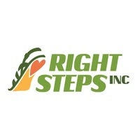
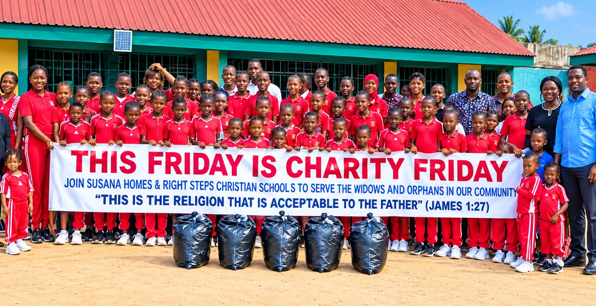

01
PRIVATE POLYTECHNIC
Right Steps Institute of Management & Technology
RSIMT provides opportunities for academic learning, practical skills development, technology and the Work-to-Learn Program.
Explore RSIMT →
Discover the institutions, programmes and community initiatives that form part of Right Steps Incorporated.
Each area has its own purpose while contributing to the wider vision of Right Steps Incorporated.
RSIMT provides opportunities for academic learning, practical skills development, technology and the Work-to-Learn Program.
Explore RSIMT →An educational institution focused on developing learners through academic and character formation.
Explore School →A focus on supporting the learning, development and growth of young children.
Learn More →A learning area within the wider Right Steps structure. Detailed programme information can be added when finalized.
Explore JSB →Susana Homes has two campuses, providing a place of care, support and development for the children connected with the homes.
An agricultural initiative involving areas such as poultry and farming.
Explore Ella Lee Farm →Churches and ministry activities connected with the wider Right Steps organization.
Explore Churches →Charity Friday is a special initiative hosted by Right Steps Christian School (RSCS), bringing together JSB students and staff in a spirit of service, giving and community support.
It provides an opportunity for students and staff to participate in activities that encourage compassion, responsibility and service to others.
